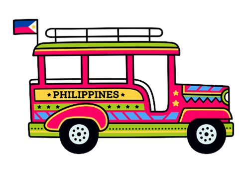
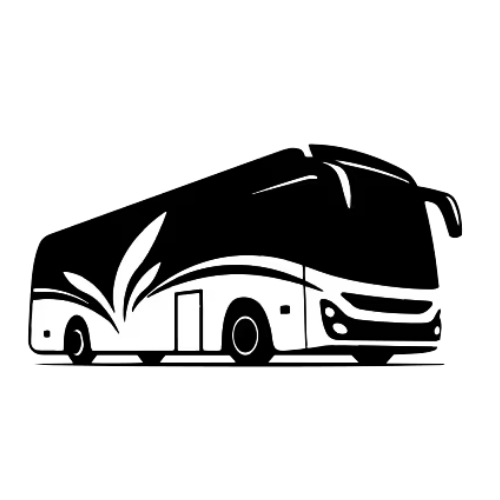
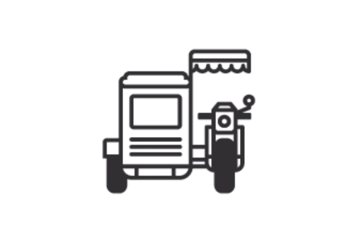

🏠 Return to SJDM
MONTE Nav
00:00:00
Loading Date...
Regular
Student
Senior/PWD
Public
Private

Trad. Jeep
Modern Jeep

Regular
P2P Bus

Regular (Shared)
Special (1p)
Special (2p)
Special (3p)
UV Exp
MRT-7
Moto
Car
Est. Fare
₱ 0.00
Distance
0.00 km
Est. Arrival
--:--
MONTE Intelligence
Hello, Traveler!
SJDM Live Transit Analytics Online
Analyzing city patterns...
Loading weather...
Waiting for route input...
Did you know? SJDM is the gateway between Metro Manila and Bulacan.
Route Details
Analyzing Traffic...
Waiting for input...
User Profile
App Theme
Light
Dark
Auto
Saved Passenger Type
Regular
Student
Senior/PWD
Saved Locations
Set Origin as Home
Navigate to Home
System Controls
Reset All Markers